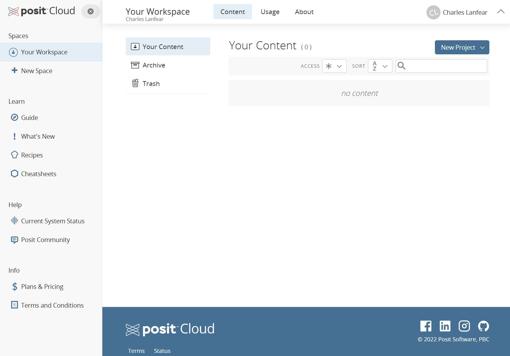
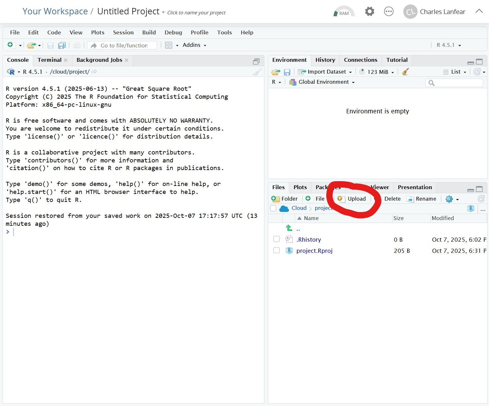

This document walks you through installing R and RStudio on your personal computer. If you have an iPad or Android tablet, scroll to the bottom for Posit Cloud instructions.
In the instructions below, anywhere it says (version), there will be a series of numbers such as 4.5.1. The specific version does not matter, but we want to always use the most recent one.
Installing R
Windows
- Go to the Windows Installers page.
- Click
Download R (version)to download: Whatever version is listed will be the most current.
- Click
- Run the installer.
- If the installer asks, grant it administrative privileges to install.
- Follow the on-screen instructions.
- You do not need to change any default values unless you have a good reason.
- Once it completes, R is installed!
- There may now be R icons on your desktop or start menu, but we typically do not use R directly.
MacOS
- Go to the MacOS Installers page.
- Scroll to “Latest release”
- Click
R-(version).pkgto download: Whatever version is listed will be the most current.- If your Mac is less than 5 years old, you want the
arm64version.
- If your Mac is less than 5 years old, you want the
- Run the installer.
- Follow the on-screen instructions.
- You do not need to change any default values unless you have a good reason.
- Once it completes, R is installed!
- There may now be R icons on your desktop or start menu, but we typically do not use R directly.
Installing RStudio
Windows
- Go to the Installers page.
- Click
Download RStudio for Windowsor, under All Installers, the link next toWindows 10/11to download: Whatever version is listed will be the most current.
- Click
- Run the installer.
- If the installer asks, grant it administrative privileges to install.
- Follow the on-screen instructions.
- You do not need to change any default values unless you have a good reason.
- Once it completes, RStudio is installed!
- We will use the RStudio icon to load RStudio and use R.
- Open RStudio and verify it loads.
- In the bottom-left panel of RStudio, you should see something vaguely like the image at the end of this document.
- If there are any problems, email me at cl948@cam.ac.uk
MacOS
- Go to the Installers page.
- Click
Download RStudio for MacOSor, under All Installers, the link next tomacOS 12+to download: Whatever version is listed will be the most current.
- Click
- Run the installer.
- Follow the on-screen instructions.
- You do not need to change any default values unless you have a good reason.
- Once it completes, RStudio is installed!
- We will use the RStudio icon to load RStudio and use R.
- Open RStudio and verify it loads.
- In the bottom-left panel of RStudio, you should see something vaguely like the image below.
- If there are any problems, email me at cl948@cam.ac.uk
When you open RStudio, you should see something similar to this in the bottom-left:

If so, your installation was successful! If not, send me an email.
Posit Cloud
If you do not have a Windows or MacOS computer (or Linux), you cannot install R or RStudio. You may instead use Posit Cloud which is a browser-based version of RStudio. It has some limitations in capability and is only free for the first 25 hours, but it will do everything needed for IQA.
- Go to posit.cloud
- Click “Get Started”
- In the left column is the Cloud Free plan. Select “Learn More”.
- Select “Sign Up” and either link it to an existing account (e.g., Google) or create a new account.
- Once logged in, you should see “Your Workspace” which looks something like this:
 - To bring up RStudio, you can create a “New Project” with the button in the top right and select “New RStudio Project”
- You should now see an interface that looks just like the usual RStudio.
- One key difference: You can’t directly access files on your computer! They live on
posit.cloud. - To upload files, click the “Upload” button in the Files manager in the bottom right:
- One key difference: You can’t directly access files on your computer! They live on
